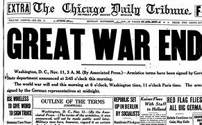

<!DOCTYPE html>
<html lang="en"></html>
<head>
<meta charset="UTF-8" />
    <meta http-equiv="X-UA-Compatible" content="IE=edge" />
    <meta name="viewport" content="width=device-width, initial-scale=1.0" />
    <link rel="stylesheet" href="stylesheet/styles.css" />
    <title> World War 1 Timeline</title>
</head>
    <h1>1918, The Final Year</h1>

<p>Several events occured in 1918 during the war. Germany invaded Russia, Turks recovered Trebizond, but most importantly, the war was over.</p>

<p>The Allied powers defeated the Central powers. France, Russia, the British empire, Italy, and the United States were victorius.</p>




